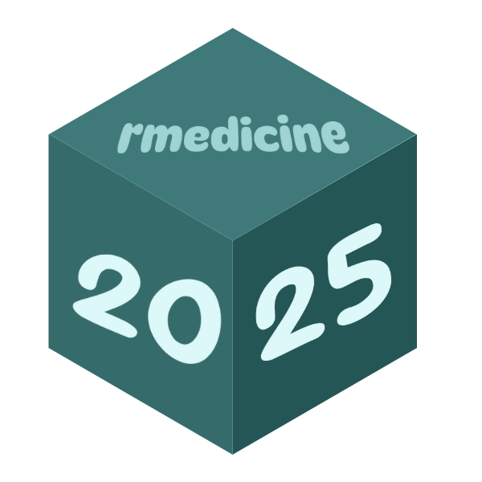

R package development with GitHub Pages and pkgdown
R/Medicine 2025
Senior Data Scientist, Statistics Canada
Housekeeping and preamble
Where to access today’s materials
- The link in the footer (ggnot2.site/index.html) contains the
pkgdownsite we will be working towards building together - You can access the slides at ggnot2.site/slides.html, which are also embedded on the
pkgdownsite - You can access the GitHub repo by clicking the GitHub icon in the navbar, or by going to github.com/melissavanbussel/rmedicine
How to participate
- Please participate! This is a 3-hour workshop, which is a long time to stay focused. The more you participate, the more fun it will be for everyone.
By the end of this workshop, you will have…
- 🌎 Your package available on GitHub for others to install
- 📄 A polished pkgdown website for your package, deployed via GitHub Pages
- 🎨 An understanding of how to customize the trickier components of pkgdown websites
The final product we will create
Background knowledge
- Participants should have prior experience with Git, but don’t need prior experience with
pkgdownor GitHub Pages. - Participants should also have some basic familiarity with the structure of R packages (e.g., the
R/folder and theman/folder).
Agenda/schedule for today
Section 0: Pre-workshop setup steps
Software installations
Please ensure you have all of the following software installed (and updated to the most recent versions):
Git and GitHub setup
- We will be using GitHub (and GitHub Pages) for this workshop. Please ensure you have a GitHub account that you’re able to log into and access during the workshop.
- Before the workshop, please ensure that Git is configured properly on your machine.
- In RStudio, you can run the
git_sitrep()function from theusethispackage to verify your configuration.
What you should see from running git_sitrep()
- You should see your name and email under the “Git global (user)” section. If not:
What you should see from running git_sitrep()
- You should see
Vaccinated: TRUE. If not:
What you should see from running git_sitrep()
- You should see the username and email associated with your GitHub account, and you should see the word “discovered” beside the line that says “Personal access token”. If not:
Section 1: Basic package creation
Creating a new project
- Make sure the
devtoolspackage is installed File > New project > R package using devtools- Name of the package:
rmedicine
The DESCRIPTION file
Run
then update the Authors@R field and change the version number to something a little less long.
Creating a README.md file
Making our first R function
#' Print hello world
#'
#' This function just prints hello world.
#'
#' @param x This argument does nothing.
#' If it did do something, it might require more words to explain.
#'
#' @return Prints `"Hello, world!"` to the console
#'
#' @examples
#' print_hello_world(x = 1)
#'
#' @export
print_hello_world <- function(x) {
print("Hello, world!")
}Let’s add a second function
#' Print hello R/Medicine
#'
#' This function just prints hello R/Medicine.
#'
#' @param x This argument does nothing.
#' If it did do something, it might require more words to explain.
#'
#' @return Prints `"Hello, R/Medicine"` to the console
#'
#' @examples
#' print_hello_rmedicine(x = 1)
#'
#' @export
print_hello_rmedicine <- function(x) {
print("Hello, R/Medicine!")
}We should probably add some tests, too
Repeat for the print_hello_rmedicine function
Section 2: Getting things up onto GitHub Pages
Always run check() before pushing to GitHub
We should see no errors, warnings, or notes!
Initialize the git repository
This will create the .git folder, and populate the .gitignore file.
Creating the repository on GitHub
The usethis package makes this step very simple for us!
Publishing the pkgdown site using GitHub Pages
Again, the usethis package makes this very easy to do!
Making changes from here
- Whenever we push to the
mainbranch, our website will be automatically updated for us! - Remember: always
pullbefore youpush
To preview changes locally:
Section 3: Let’s make things a little prettier
Creating a package logo

- If you don’t already have a logo, the hexmake Shiny app or the hexSticker package are good choices
- For today, you can use the image on the left, if you want!
Adding the logo to your package
You can run the use_logo function, which will automatically place the file in the right location within your package.
Creating favicons
Without loading the pkgdown package, run
Adding a bootswatch theme
In the _pkgdown.yaml file, add a bootswatch theme:
Tip
There are a couple of bootswatch themes that are so new, they haven’t been implemented in Quarto. Most of them should work, though!
Customizing appearance using bslib variables
- Consult this page to see a full list of options that you can change
- To change the “primary colour” of your theme, for example:
Changing the font using bslib
- There are a few ways you can change the fonts, but using Google fonts with
bslibis the easiest!
Adding a custom.scss file
- If you want to customize things further, create a file called
extra.scssin thepkgdownfolder - It will automatically be copied to the correct location by GitHub Actions
└── 📁 rmedicine/
└── 📁 pkgdown/
└── 📄 extra.scssRight clicking and inspecting
Let’s change the colour of the search bar!
- In Google Chrome:
Right click > Inspect - The class is called
.form-control
Adding a lightswitch
- We can enable a dark mode by setting
light-switchtotruein our_pkgdown.ymlfile:
…but what if we want different styles for light mode and dark mode?
In our extra.scss file:
Syntax highlighting theme
We can set a syntax highlighting theme for light mode and dark mode.
BREAK
Section 4: Customizing our content
The default “reference” page
- The “Reference” page is the page that lists all of the functions (and datasets) that are part of your package
- By default, it puts the functions in alphabetical order
- We can change that, though! Take a look at the
pkgdowndocumentation for an example.
Reordering the contents of the reference page
In the _pkgdown.yml file:
- Create sections using
title - Create descriptions using
desc - List the pages using
contents
Shortcut: “Topic matching”
You can use “topic matching” as a shortcut:
Getting fancier with the reference page
You can also use emojis, and create subsections!
Customizing navbar contents
- There are some built-in options for the navbar, such as
search,githubandlightswitch
navbar:
structure:
right: [search, github, lightswitch]Components
- You can create custom buttons in the navbar using components
- Use fontawesome icons to customize the button appearance
Customizing footer contents
- The footer works very similarly to the navbar
- It’s markdown, so you can include almost anything you want!
footer:
structure:
left: developed_by
right: built_with_pkgdown
components:
developed_by: "Developed by [Melissa Van Bussel](https://melissavanbussel.com/) :computer: for the [R/Medicine 2025 Conference](https://rconsortium.github.io/RMedicine_website/)."
built_with_pkgdown: "This site was built using [pkgdown](https://pkgdown.r-lib.org/)! <img src='https://pkgdown.r-lib.org/logo.png' alt='pkgdown logo' width='25'>"Adding JavaScript
- Earlier, we saw the
extra.scssfile pkgdownalso automatically recognizes thepkgdown/extra.jsfile
└── 📁 rmedicine/
└── 📁 pkgdown/
└── 📄 extra.scss
└── 📄 extra.jsLet’s see it in action
- We’ll add an additional component to our navbar called
#js_alert# - When the button is clicked, a pop-up message will appear
document.addEventListener("DOMContentLoaded", function() {
let javascriptAlert = document.querySelectorAll(".nav-link[href*='#js_alert#']");
javascriptAlert.forEach(function (jsAlert) {
jsAlert.addEventListener("click", function(event) {
event.preventDefault();
alert("JavaScript is working!");
});
});
});Can you add more files?
Yes! You can insert additional HTML etc.
For example, we can add additional javascript using after_body in the _pkgdown.yml file:
template:
includes:
after_body: |
<script src="https://cdn.jsdelivr.net/npm/canvas-confetti@1.6.0/dist/confetti.browser.min.js"></script>
<script>
document.addEventListener("DOMContentLoaded", function () {
document.addEventListener("click", function (e) {
if (typeof confetti === "function") {
const x = e.clientX / window.innerWidth;
const y = e.clientY / window.innerHeight;
confetti({
origin: { x: x, y: y }
});
}
});
});
</script>BREAK
Section 5: Stuff that requires a deeper understanding of GitHub Pages
ELI5 ELI15: How does GitHub Pages actually work*?
(* = in our current, very specific scenario)
- When you push to
main, the terminal commands in the.github/workflows/pkgdown.yamlfile are run on a virtual machine - This file defines the “workflow” (pipeline)
- The commands tell GitHub to:
- Install stuff: R, pandoc, our R packages…
- Build the site (
pkgdown::build_site_github_pages()) - Place the resulting HTML files in the correct place (
/docs) 😊
…Why do I need to know this?
- The
pkgdownandusethispackages take care of the hard work for us by writing this file for us - If we want to do more complicated things, though, we need to be able to read, understand, and modify this file.
GitHub Actions
- If you plan on re-running the same terminal commands in many different workflows/pipelines/projects, you probably don’t want to retype them out all the time
- Example: You’ll probably always want to install R for every R project
- You can create a GitHub Action and run a series of terminal commands with just 2 lines, instead of many (e.g., 50+)!
- Other people can use your Actions, too! 🤝
Example: Install Quarto action
It’s pretty complicated:
GitHub Actions in the .github/workflows/pkgdown.yaml file
…The Quarto installation is just one small part of this action
What’s my point?
- Point 1: It’s complicated, and it’s great that most of the hard work is done for us.
- Point 2: It’s ultimately just terminal commands, though. You can probably do 99% of what you want to do with just a few commands.
What are those commands?
Remember: GitHub Pages will host any page that ends up in our /docs folder.
The most important commands for R users are:
mkdir folder_name: Make a new folder calledfolder_namecd folder_name: Change current directory tofolder_name(usecd ../to go up a folder level)cp old_folder/file_name new_folder/file_name: Copy thefile_namefrom theold_folderto thenew_folderRscript -e: Execute a line of R codequarto render proj_name --output-dir="docs": Render your Quarto file into thedocsfolder
Let’s see an example!
We’re going to change the link.svg image

How do we change it?
- The file being used is located at
docs/link.svg - The
docsfolder is in our.gitignore, though, so just changing the file will only work locally - If we want it to work on GitHub Pages: In our “workflow” file, we have to make a copy of this file!
Modifying the .github/workflows/pkgdown.yaml file
We need to add this after the pkgdown::build_site_github_pages() function is called.
- name: Override link.svg image with custom_link.svg image
run: cp docs/custom_link.svg docs/link.svgVote: Which topic do you want to cover?
- Quarto vignettes
- Logo image in the navbar
- Adding a dynamic test coverage badge
- Custom domain for your GitHub Pages
Adding a Quarto vignette
Build > Install > Clean and install- Ensure Quarto is installed (including the
quartopackage in R)
Troubleshooting Quarto vignettes
- If you use any packages that are not in your
DESCRIPTIONfile, you must add it as a dependency in.github/workflows/pkgdown.yaml.
Tip
If there is an error in your Quarto file (i.e., it does not render), the error message will only say system command 'quarto' not found. Quarto is probably installed, and you probably have a syntax error in your Quarto vignette.
Changing your navbar structure to account for your documentation
You can type Alt+0160 to add a blank character ( will not work).
navbar:
structure:
left: [vignettes, rd_files]
right: [search, github, my_linkedin, js_alert, lightswitch]
components:
vignettes:
text: " Vignettes"
icon: fa-book
menu:
- text: Examples
- text: " Tutorial Title"
href: articles/my_vignette.html
rd_files:
text: " Function Documentation"
icon: fa-file
menu:
- text: All functions
href: reference/index.html
- text: " Print things"
- text: " Print Hello World"
href: reference/print_hello_world.html
- text: " Print Hello R/Medicine"
href: reference/print_hello_rmedicine.htmlAdding a logo in your navbar
In the pkgdown/extra.js file (replace with your package name, URL, and folder depth):
document.addEventListener("DOMContentLoaded", function () {
const brand = document.querySelector(".navbar-brand");
if (!brand) return;
// Use different offset based on environment
const offset = window.location.protocol === "file:" ? 7 : 1;
const pathParts = window.location.pathname.replace(/^\/+/, '').split('/');
const depth = Math.max(0, pathParts.length - offset);
const prefix = '../'.repeat(depth);
const imgSrc = `${prefix}logo.png`;
brand.innerHTML = `
<img src="${imgSrc}" height="30" style="vertical-align: middle; margin-right: 10px;"">
<span style="vertical-align: middle;">rmedicine</span>
`;
});In the pkgdown/extra.scss file (to add a hover effect):
.navbar-brand:hover {
color: var(--bs-secondary-color);
}Customizing the sidebar
You can add or remove any of the default components:
Customizing author appearance
You can customize the information for each author, including by adding arbitrary HTML:
Creating custom sections in your sidebar
“Simple” badges
Examples where shields.io will do the work for you:
- Package version on GitHub: https://shields.io/badges/git-hub-r-package-version
- Workflow/pipeline status: https://shields.io/badges/git-hub-actions-workflow-status
Badges that require modifying your workflow file
- You can create dynamic badges that contain anything you can think of
- If you use shields.io, you can pull any field from a
.jsonor.yamlfile - We can modify the workflow to run arbitrary code, then save the results into a
.jsonfile or.yamlfile - As long as we output the file to the
docsfolder, shields.io will be able to access it!
Code coverage badge
Let’s add a test coverage badge:
We need to:
- Use
covrto check our package coverage - Output the results to a
.jsonfile in thedocsfolder - Create the badge using shields.io
Calculating the code coverage
In the _pkgdown.yml file:
- name: Add test coverage badge
run: Rscript -e "jsonlite::write_json(list(coverage = sprintf('%.1f%%', covr::percent_coverage(covr::package_coverage()))), 'docs/coverage.json', auto_unbox = TRUE)"We now need to add the jsonlite, testthat, and covr packages to our workflow’s package installations.
In the .github/workflows/pkgdown.yaml file:
Creating the badge
- Generate the badge here: https://shields.io/badges/dynamic-json-badge
- My YouTube video has more details if you need!
Adding the badge to the sidebar
home:
sidebar:
structure: [badges, links, authors]
components:
badges:
title: Package badges
text: |
<br>
<br>
<br>BREAK
Section 6: Extra fancy stuff
Using a custom domain for GitHub Pages
- By default, your website will end with
.github.io - You can purchase a custom domain from any provider (you do not need to purchase hosting services)
- For this workshop, I purchased
ggnot2.sitefor a year for \(\approx\) $2 CAD from `domain.com
Telling your domain to point to your GitHub Pages
From your domain provider’s DNS settings (full details here):
- Remove any default
Arecords - Add the following 4 IP addresses as
Arecords (use@rather thanwww)
185.199.108.153
185.199.109.153
185.199.110.153
185.199.111.153- Add a
CNAMErecord (usewwwrather than@) and point it to your GitHub Pages URL
melissavanbussel.github.io/rmedicineTip
If your custom domain has a different depth than your GitHub Pages URL, you may need to adjust some file paths.
Telling GitHub Pages that you have the rights to do this 😊
- From your GitHub project:
Settings > Pages > Custom domainand enter the domain withoutwwworhttps://in front of it (e.g.,ggnot2.site) - Check the “Enforce HTTPS” checkbox
- It will take 15 minutes to 48 hours for it to work
Including Quarto files inside of your pkgdown site
- The slides for this workshop are actually rendered as part of my package’s workflow!
- They are included in the
slides/folder of my package. - I don’t necessarily recommend this approach, but it does demonstrate how creative you can get with GitHub workflows.
How to include a Quarto file inside of your pkgdown site
- Create a
slidesfolder, then aslides.qmdfile in this folder - Add
^slides$to your.Rbuildignore - Add a
quarto rendercommand to your.github/workflows/pkgdown.yamlfile, and output the files to thedocsfolder
Feedback form
Thank you!
Any questions?